CUBE MANUAL
F2L
コーナーとエッジを組にして、下2段を揃える

F2Lを習得しよう
クロスを揃えたあと、コーナーとエッジを組にして下2段を完成させる方法がF2L（First Two Layers）です。基本ケースは41種類ありますが、手順を丸暗記するより、パーツの動きを見て仕組みを理解することをおすすめします。
はじめに、この章で使う用語を確認します。
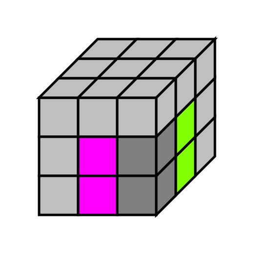
図の濃いグレーで示した、目的のパーツが入るべき場所のことをスロットといいます。F2Lとは、このスロットに目的のコーナーとエッジを同時に入れる手順のことを指します。
次の順番で習得するのがおすすめです。
- I型、T型(最も基本的な手順)
- エッジ・コーナーともに上段にあり、離れているとき
- エッジ・コーナーともに上段にあり、くっついているとき
- エッジが中段にあるとき
- コーナーが下段にあるとき
- その他の手順
コーナーにはクロス色が含まれているため、エッジより見つけやすい傾向があります。まず上段のコーナーパーツを探すと、目的のペアを見つけやすくなります。
基本4手順
F2Lには4つの基本手順があります。多くのケースは、I型またはT型を作る「変形」と、基本手順でスロットへ入れる「挿入」の2段階に分けて考えられます。
本書では、途中のケースをI型またはT型に変えることを基本形に帰着させると表現します。基本形を作ったら、U面で位置を合わせ、最後にスロットへ挿入します。
まずは、I型とT型の基本手順を確認します。それぞれ左右対称の2種類があります。
I型
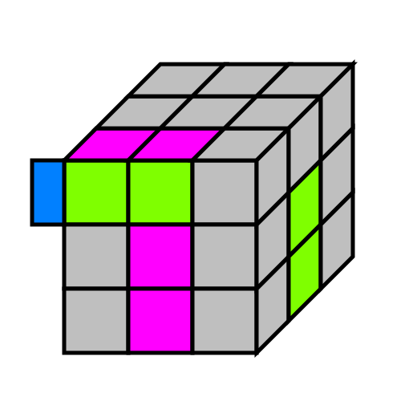
手順はこちらをクリック
R U' R'
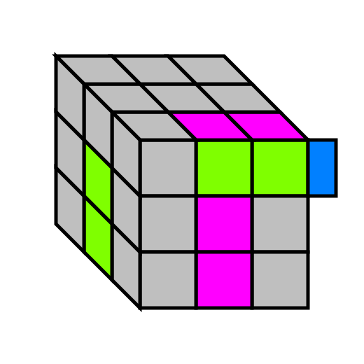
手順はこちらをクリック
L' U L
T型
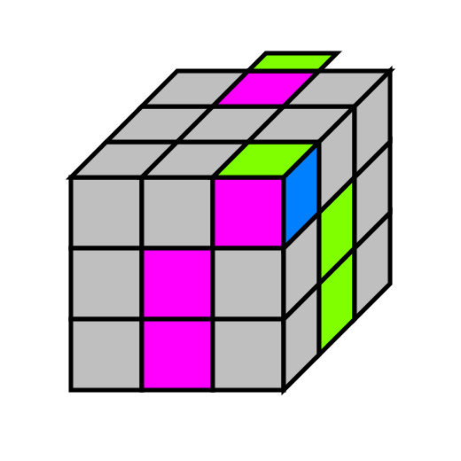
手順はこちらをクリック
R U R'
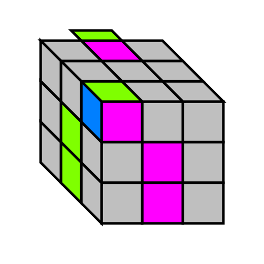
手順はこちらをクリック
L' U' L
その他の基本手順
I型とT型は最もよく出てくるので、違う向きからでも揃えられるようにしておきましょう。
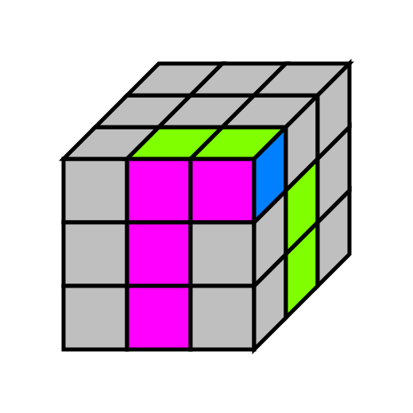
手順はこちらをクリック
F R' F' R
この手順をヘッジスラマーといいます。
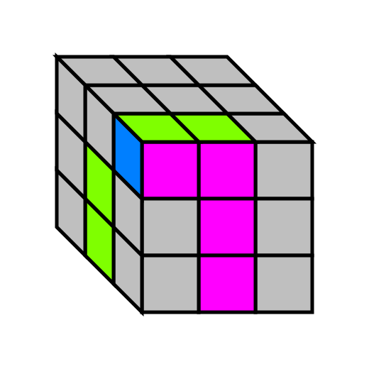
手順はこちらをクリック
F' L F L'
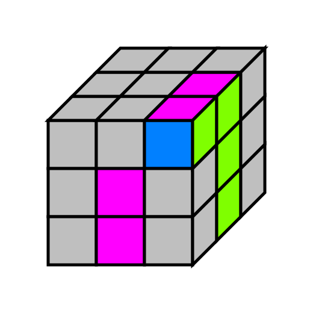
手順はこちらをクリック
R' F R F'
この手順をスレッジハンマーといいます。
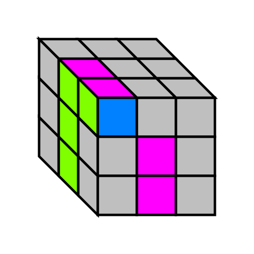
手順はこちらをクリック
L F' L' F
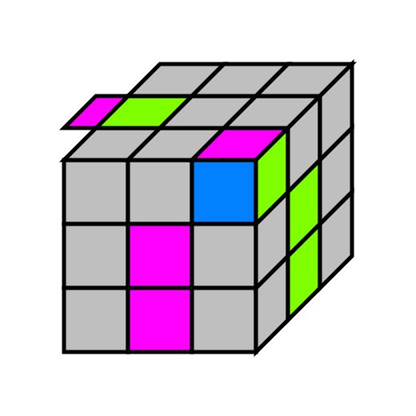
手順はこちらをクリック
F' U' F
回しにくいので、キューブを回転させても構いません。
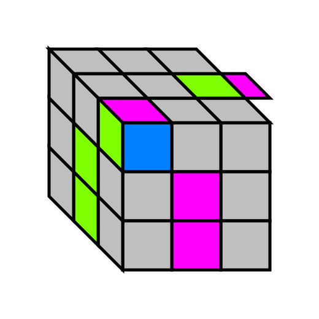
手順はこちらをクリック
F U F'
回しにくいので、キューブを回転させても構いません。
エッジ・コーナーともに上段にあり、離れているとき
エッジとコーナーが上段で離れているケースには、T型のほかにQ、R、S、U、Vの5パターンがあります。
前半がI型またはT型に帰着させる手順で、後半がI型またはT型の手順となります。
Q型
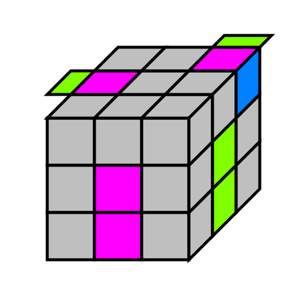
手順はこちらをクリック
(R U R') U2 (R U' R')
(R U R')によってI型に帰着され、U2でI型の基本形に持っていき、最後にI型の手順を行ってスロットに入ります。
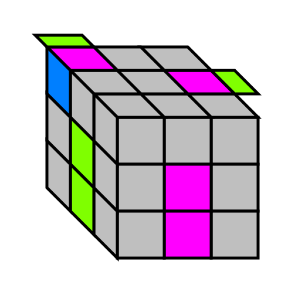
手順はこちらをクリック
(L' U' L) U2 (L' U L)
(L' U' L)によってI型に帰着され、U2でI型の基本形に持っていき、最後にI型の手順を行ってスロットに入ります。
R型
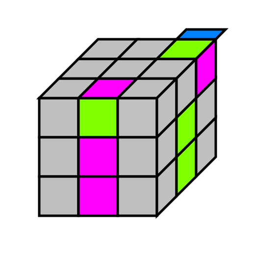
手順はこちらをクリック
(R U R') U (R U R')
(R U R')によってT型に帰着され、UでT型の基本形に持っていき、最後にT型の手順を行ってスロットに入ります。
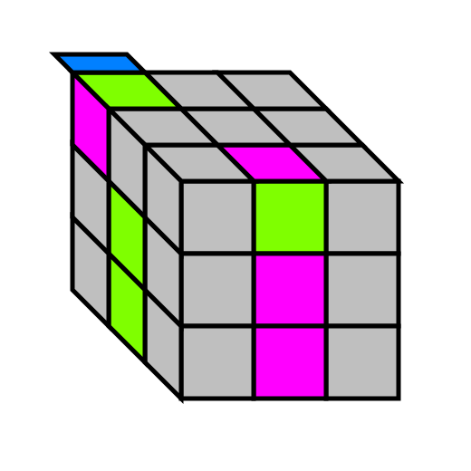
手順はこちらをクリック
(L' U' L) U' (L' U' L)
(L' U' L)によってT型に帰着され、U'でT型の基本形に持っていき、最後にT型の手順を行ってスロットに入ります。
S型
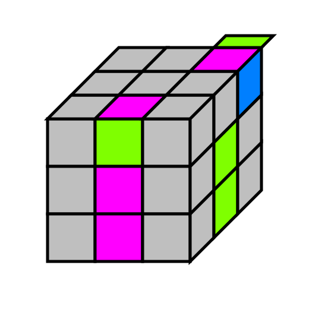
手順はこちらをクリック
(R U2 R') U2 (R U' R')
(R U2 R')によってI型に帰着され、U2でI型の基本形に持っていき、最後にI型の手順を行ってスロットに入ります。Q型とセットで覚えましょう。
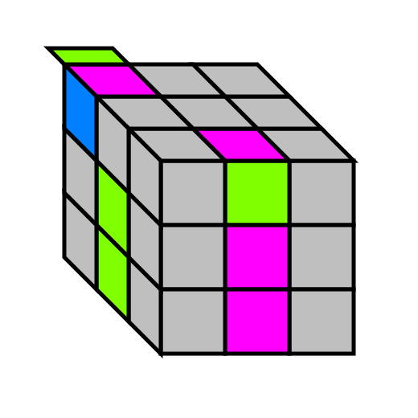
手順はこちらをクリック
(L' U2 L) U2 (L' U L)
(L' U2 L)によってI型に帰着され、U2でI型の基本形に持っていき、最後にI型の手順を行ってスロットに入ります。Q型とセットで覚えましょう。
U型
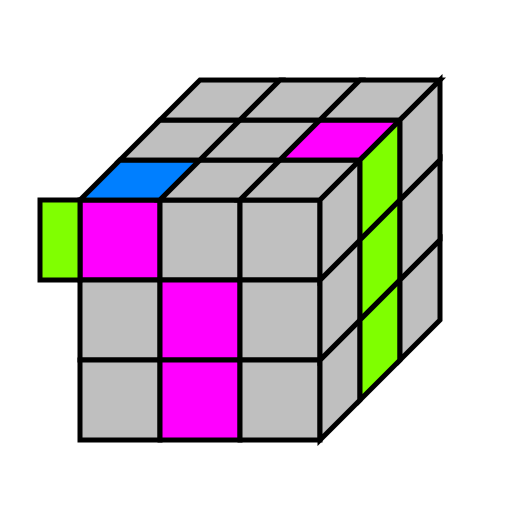
手順はこちらをクリック
(R U2 R') U (R U' R')
(R U2 R')によってI型に帰着され、UでI型の基本形に持っていき、最後にI型の手順を行ってスロットに入ります。
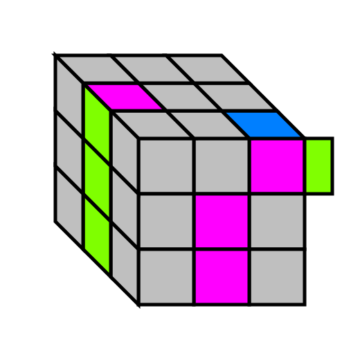
手順はこちらをクリック
(L' U2 L) U' (L' U L)
(L' U2 L)によってI型に帰着され、U'でI型の基本形に持っていき、最後にI型の手順を行ってスロットに入ります。
V型
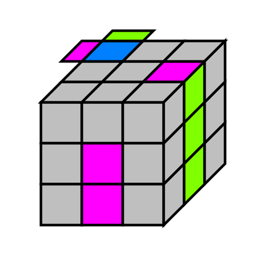
手順はこちらをクリック
(R U R') U (R U' R')
(R U R')によってI型に帰着され、UでI型の基本形に持っていき、最後にI型の手順を行ってスロットに入ります。U型とセットで覚えましょう。
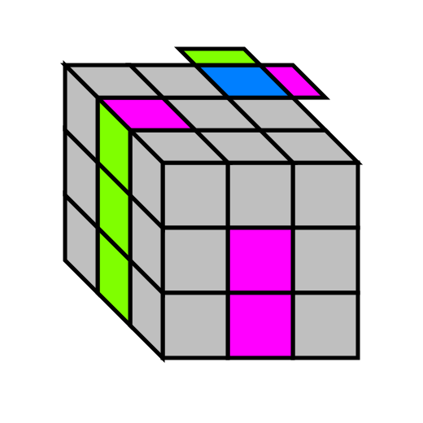
手順はこちらをクリック
(L' U' L) U' (L' U L)
(L' U' L)によってI型に帰着され、U'でI型の基本形に持っていき、最後にI型の手順を行ってスロットに入ります。U型とセットで覚えましょう。
エッジ・コーナーともに上段にあり、くっついているとき
エッジ、コーナーともに上段にあり、くっついているときはI型の他にJ,K,L,M,Nの5つがあります。
こちらも前半でI型またはT型に帰着させ、後半でI型またはT型の手順によってスロットに差し込みます。
J型
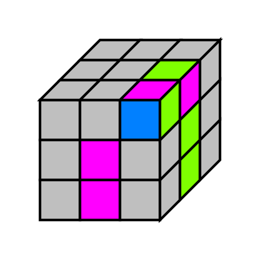
手順はこちらをクリック
(U' R U2 R') U (F' U' F)
(U' R U2 R')によってT型に帰着され、UでT型の基本形に持っていき、最後にT型の手順を行ってスロットに入ります。
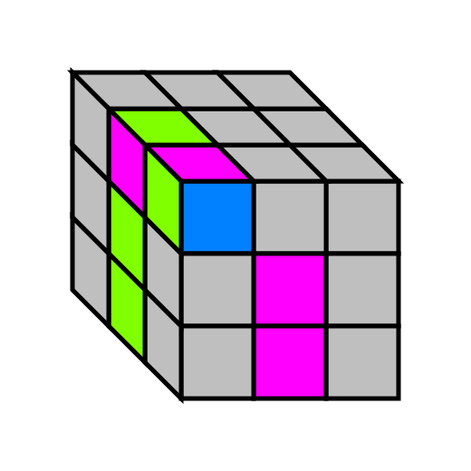
手順はこちらをクリック
(U L' U2 L) U' (F U F')
(U L' U2 L)によってT型に帰着され、U'でT型の基本形に持っていき、最後にT型の手順を行ってスロットに入ります。
K型
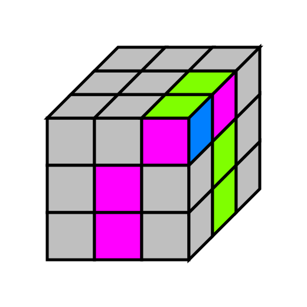
手順はこちらをクリック
(R U' R') U2 (F' U' F)
(R U' R')によってT型に帰着され、U2でT型の基本形に持っていき、最後にT型の手順を行ってスロットに入ります。
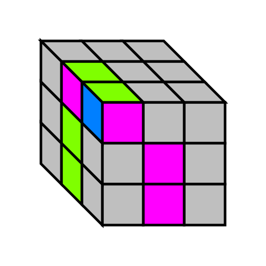
手順はこちらをクリック
(L' U L) U2 (F U F')
(L' U L)によってT型に帰着され、U2でT型の基本形に持っていき、最後にT型の手順を行ってスロットに入ります。
L型
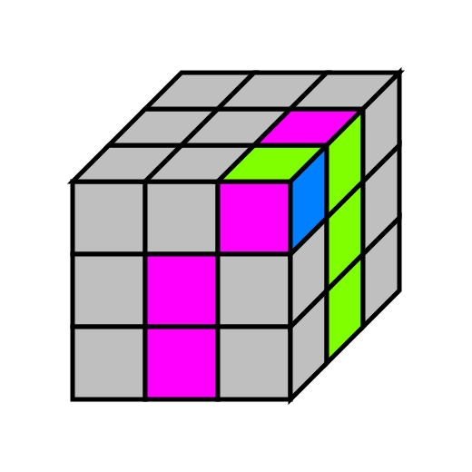
手順はこちらをクリック
(U' R U' R') U (R U R')
(U' R U' R')によってT型に帰着され、UでT型の基本形に持っていき、最後にT型の手順を行ってスロットに入ります。
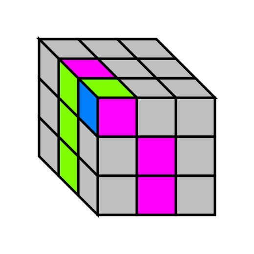
手順はこちらをクリック
(U L' U L) U' (L' U' L)
(U L' U L)によってT型に帰着され、U'でT型の基本形に持っていき、最後にT型の手順を行ってスロットに入ります。
M型
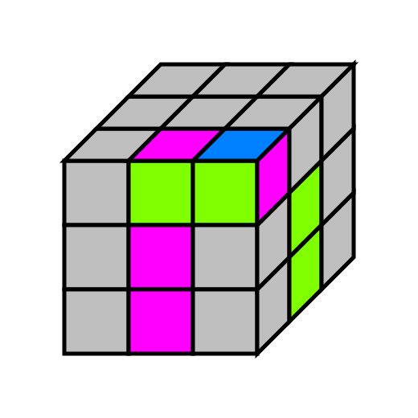
手順はこちらをクリック
(U R U' R' U' R U' R') U (R U' R')
(U R U' R' U' R U' R')によってI型に帰着され、UでI型の基本形に持っていき、最後にI型の手順を行ってスロットに入ります。F2Lの中では最も覚えにくい手順の一つです。
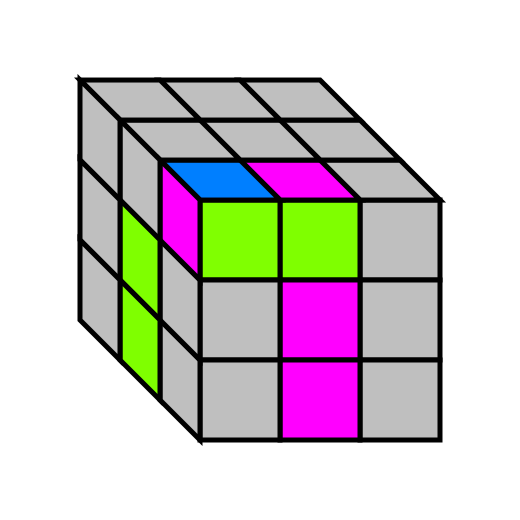
手順はこちらをクリック
(U' L' U L' U L U L') U' (L' U L)
(U' L' U L' U L U L')によってI型に帰着され、U'でI型の基本形に持っていき、最後にI型の手順を行ってスロットに入ります。F2Lの中では最も覚えにくい手順の一つです。
N型
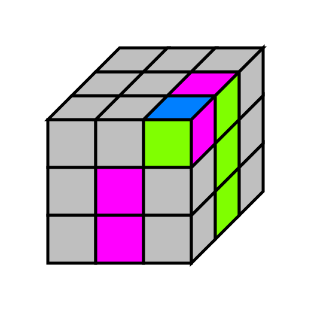
手順はこちらをクリック
(R U2 R') U' (R U R')
(R U2 R')によってT型に帰着され、U'でT型の基本形に持っていき、最後にT型の手順を行ってスロットに入ります。
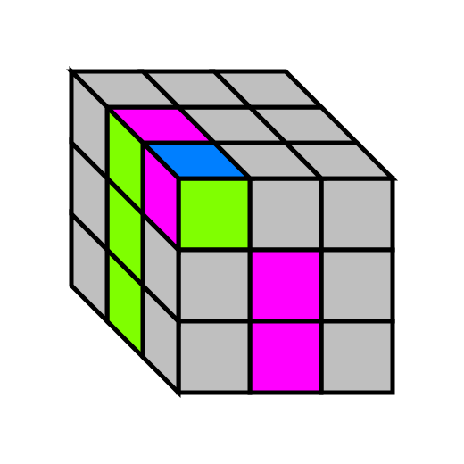
手順はこちらをクリック
(L' U2 L) U (L' U' L)
(L' U2 L)によってT型に帰着され、UでT型の基本形に持っていき、最後にT型の手順を行ってスロットに入ります。
エッジが中段にあるとき
エッジが中段にあるときは、B,G,Hのタイプがあります。ここではI,Tのいずれかの基本形にする手順を紹介します。
B1型
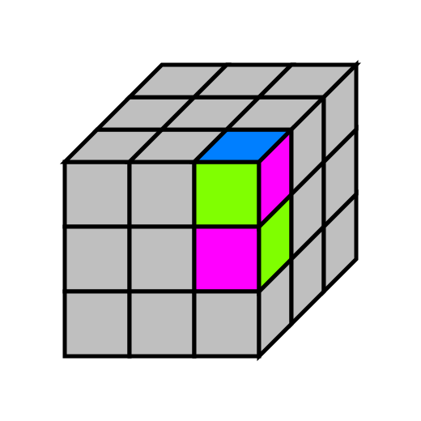
手順はこちらをクリック
U R U' R' U R U' R'
I型に帰着されます。
B2型
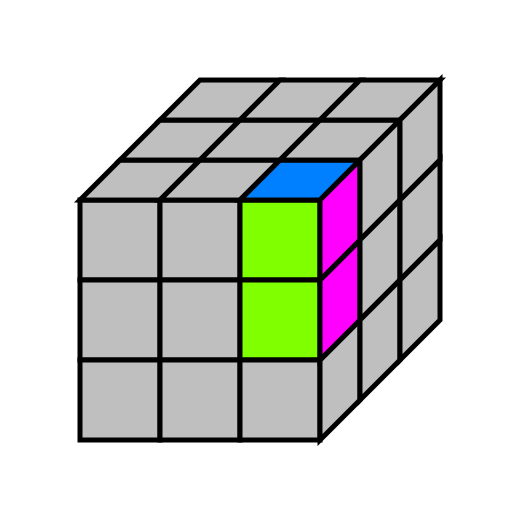
手順はこちらをクリック
R U' R'
I型に帰着されます。組になったパーツを、そのまま上段へ取り出すイメージです。
G型
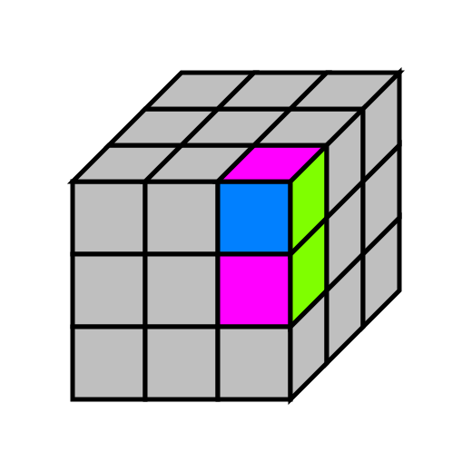
手順はこちらをクリック
U' R U' R'
I型に帰着されます。
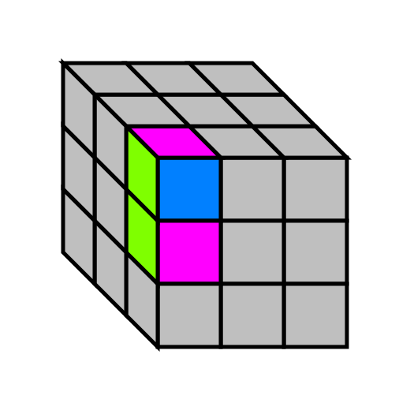
手順はこちらをクリック
U L' U L
I型に帰着されます。
H型
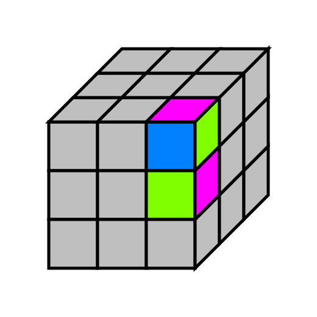
手順はこちらをクリック
U' R U R'
T型に帰着されます。
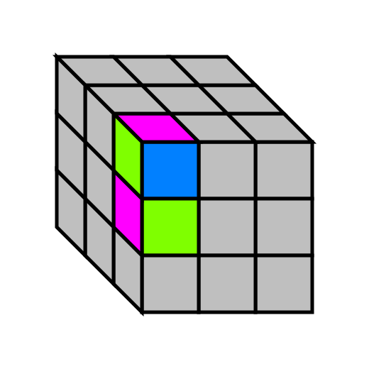
手順はこちらをクリック
U L' U' L
T型に帰着されます。
コーナーが下段にあるとき
コーナーが下段にあるときはA1,A2,E,Fのタイプがあります。ここでもI,Tの基本形にする手順を紹介します。
A1型
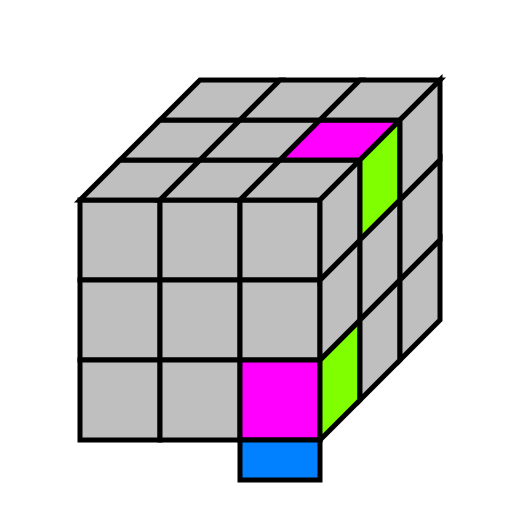
手順はこちらをクリック
(R U' R') U' (R U' R')
T型に帰着されます。前半の3手でL型に帰着されます。
A2型
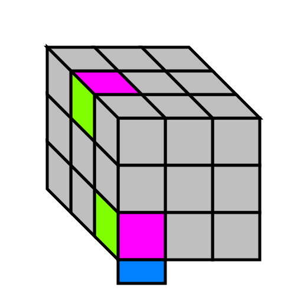
手順はこちらをクリック
(L' U L) U (L' U L)
T型に帰着されます。前半の3手でL型に帰着されます。
E型
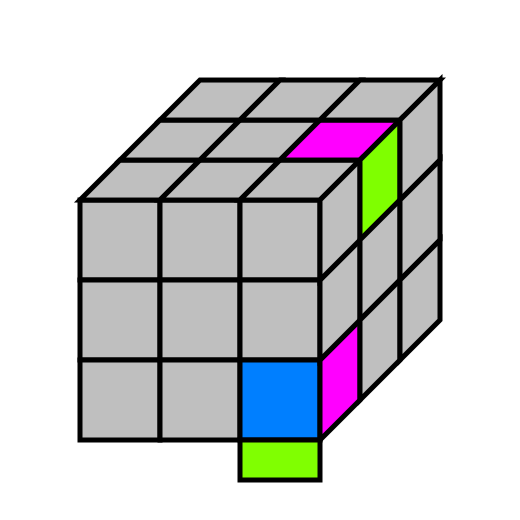
手順はこちらをクリック
R U' R'
I型に帰着されます。
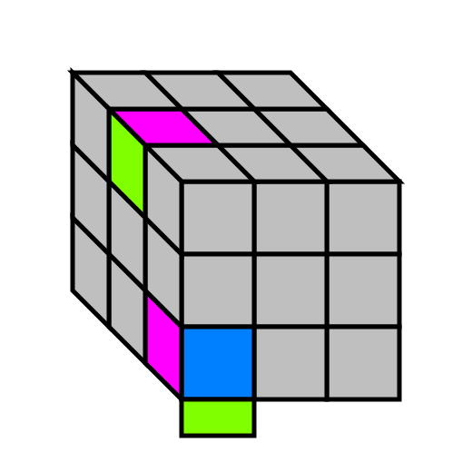
手順はこちらをクリック
L' U L
I型に帰着されます。
F型
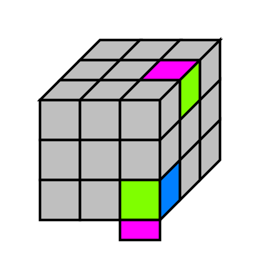
手順はこちらをクリック
R U R'
T型に帰着されます。
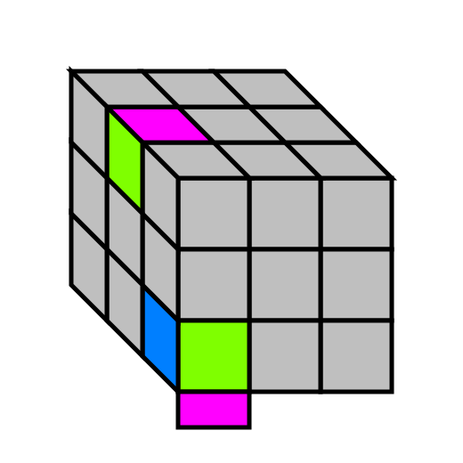
手順はこちらをクリック
L' U' L
T型に帰着されます。
その他の手順
その他の手順は、両方とも同じスロットに向きが違って入っているパターンです。A0,C,Dのパターンがあります。ここでもI,Tの基本形にする手順を紹介します。
A0型
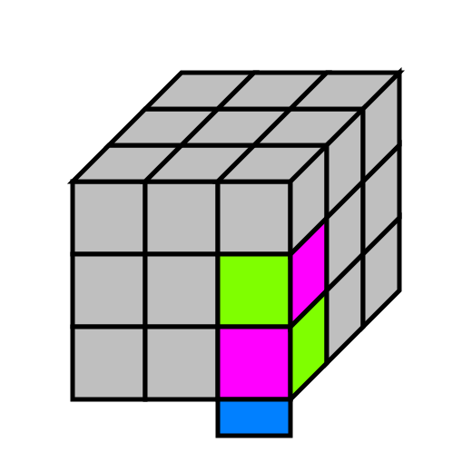
手順はこちらをクリック
(R U R') U2 (R U2 R')
T型に帰着されます。前半の3手でJ型に帰着されます。
C型
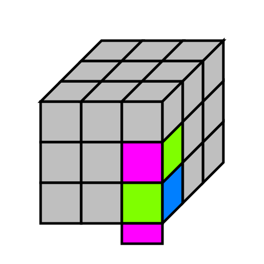
手順はこちらをクリック
(R U R') U2 (R U' R')
T型に帰着されます。前半の3手でL型に帰着されます。
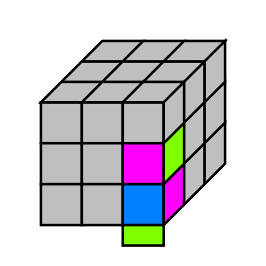
手順はこちらをクリック
(R U' R') U' (R U R')
I型に帰着されます。前半の3手でQ型に帰着されます。
D型
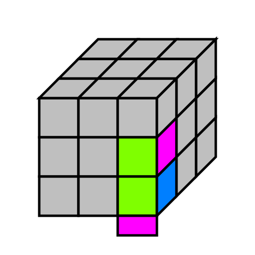
手順はこちらをクリック
(R U R') U' (R U' R')
T型に帰着されます。前半の3手でK型に帰着されます。
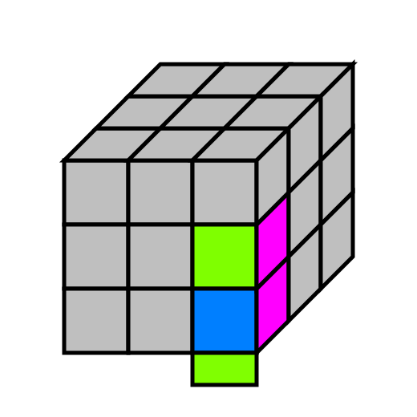
手順はこちらをクリック
(R U' R') U' (R U' R')
T型に帰着されます。前半の3手でR型に帰着されます。